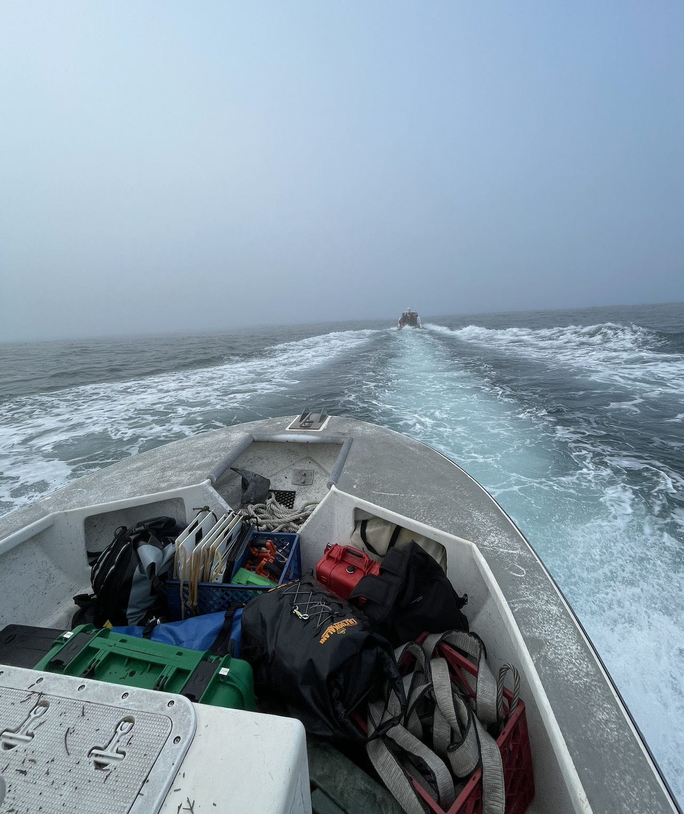
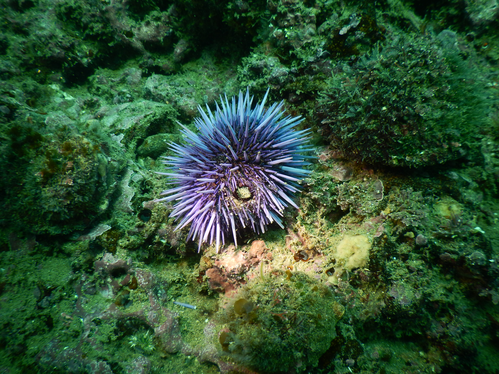
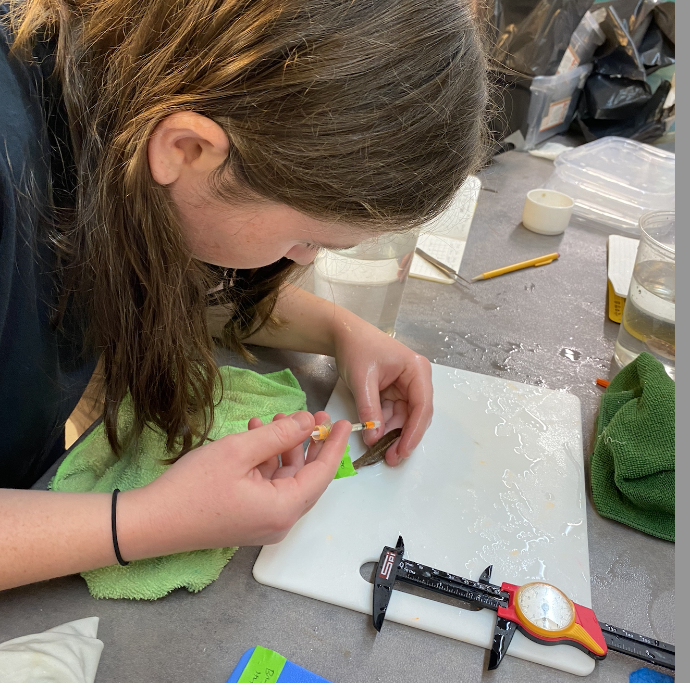
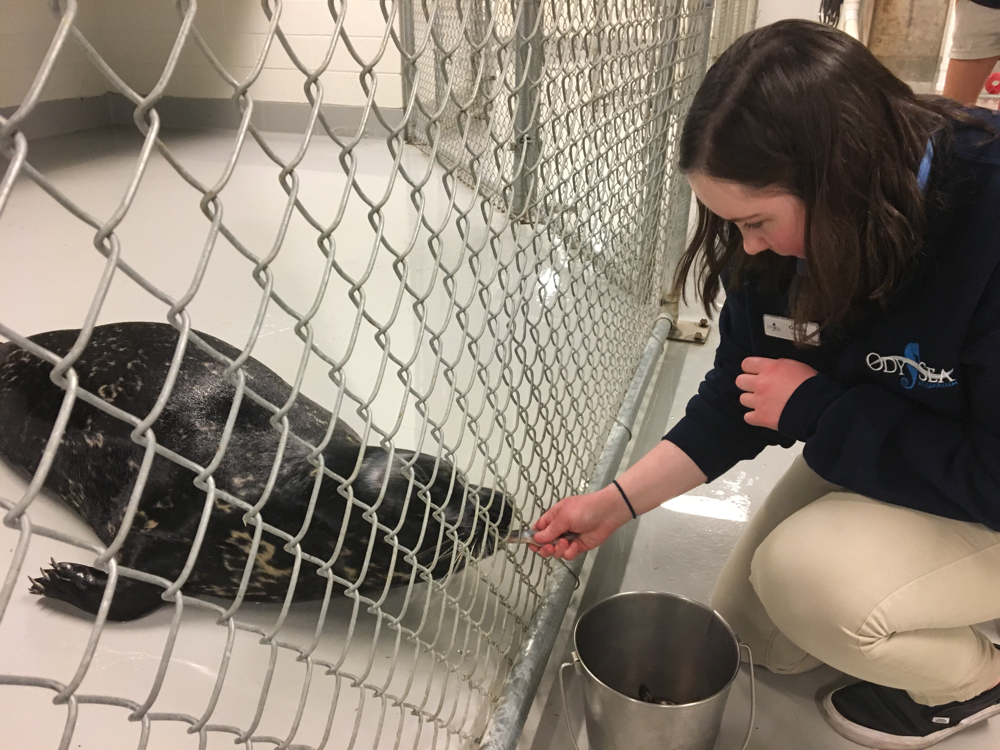

Field Research Experience
- Beltran Lab | 2021 - Present

- Raimondi-Carr Lab, PISCO | Summer 2023, 2024

- Kroeker and Kilpatrick Labs | Summer 2023

- BIOE 159 (Marine Ecology Field Quarter) | Fall 2023
- BIOE 128L (Large Marine Field Vertebrates Field Class) | Spring 2022
- BIOE 161L (Kelp Forest Ecology Field Course) | Fall 2021
Science Communication
Plain language summaries of research articles for Año Nuevo Reserve docents
Beltran RS, Lozano RR, Morris PA, Robinson PW, Holser RR, Keates TR, Favilla AB, Kilpatrick AM, Costa DP. (2024). Individual variation in life-history timing: synchronous presence, asynchronous events and phenological compensation in a wild mammal. Proceedings of the Royal Society B https://doi.org/10.1098/rspb.2023.2335
Payne AR, Czapanskiy MF, Kilpatrick AM, Robinson PW, Munro CM, Ong K, Bastidas A, Negrete AO, Theders B, Stillwell B, Coffey D, Schweitzer E, Baugh E, Salazar J, Chau-Pech K, Rodrigues M, Chavez M, Wright S, Rivas S, Reiter J, Costa DP, Beltran RS. (2024) Reproductive success and offspring survival decline for female elephant seals past prime age. The Journal of Animal Ecology. https://doi.org/10.1111/1365-2656.14226
Condit R, Reiter J, Morris PA, Oliver GW, Robinson PW, Costa DP, Beltran RS, Le Boeuf BJ. (2024) Inherent versus random variation in fitness of elephant seals: offspring quality and quantity. Canadian Journal of Zoology. https://cdnsciencepub.com/doi/pdf/10.1139/cjz-2023-0166
Lab Experience
- Beltran Lab | 2022 - Present
- BIOE 159 (Marine Ecology Field Quarter) | Fall 2023

Programming/Software Experience
- JMP | 2021 - Present
- R and RStudio | 2022 - Present
Volunteer Experience
- OdySea Aquarium | February 2017 - September 2018

Club And Community Involvement Experiences
- Rachel Carson College Council
- Women in Science Society
- Marine Science Club
- Student Union Assembly
- Student Organization Funding Advisory Committee